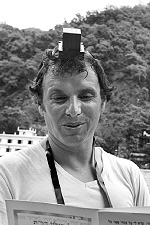

From the Halls of Montezuma
A deeply moving story of two T’mimim on shlichus in a remote village in Central America, who were able, with the help of open Divine Providence, to save a Jew from the spiritual abyss.
Translated by Michoel Leib Dobry

|
Over a period of two years, my friends and I went on shlichus to various countries across the globe. One of the places we visited was Costa Rica, a stunning tropical country in Central America with spectacular breathtaking views. The following story took place after Tishrei 5767. Many Israeli backpackers and Jewish families from the United States spend their vacations in this colorfully forested country. During our shlichus, we crossed the border into Panama and visited several Caribbean islands, where we met many Jews. We put t’fillin on many people and had conversations with them about matters of faith and the announcement of the Redemption. |
On our last Shabbos before returning to New York, we stayed in S. Jose, the capital of Costa Rica, at the home of the local shliach, Rabbi Hershel Spalter. The accommodations were excellent, and we used the opportunity to meet the very pleasant and friendly local Jewish community. We led the Shabbos davening in the Chabad shul, and afterwards we ate the Shabbos meals with the shliach and his family. The shliach recalled his own personal experiences from 770, and we were witness to the tremendous self-sacrifice of a shliach who devotes his life to the Rebbe and achieves great things on his shlichus.
We woke up very early that Sunday morning. Our plans were to make a journey of several hours to the city of S. Teresa. We had already heard that there were many Israelis in that area, and we decided to go there as well. Tourists come to this city from all over the world for its beautiful beaches and excellent surfing.
We didn’t have much time, as our flight back to New York was already scheduled for Monday night. We rented a car and immediately set out for our destination, determined to get there before sundown.
Yet, “the steps of man are directed by G-d,” and we had our fair share of delays. We lost our way several times along the long and winding roads of Costa Rica. It was getting late and the sun was beginning to set, when traffic suddenly slowed down to a snail’s pace. Officers from the Costa Rican narcotics division had put up roadblocks to entrap local dealers trying to smuggle their drugs past the border into Panama. At this point, we realized that it would be better if we found a place to stay for the night in a nearby village and continue on our journey to S. Teresa the following morning.
We got off the main highway at the first opportunity and headed for the first village we came across, a place called Montezuma. We soon discovered that this was also a tourist village, but the visitors were all Europeans. Israelis hardly ever came there.
We drove towards the center of the village, where we inquired about a suitable motel that could meet our basic requirements, i.e., a gas burner for cooking with the pots we had brought.
Suddenly, a young man with dreadlocks, earrings, and strange tattoos all over his face came to our assistance. He was standing together with a local girl near a booth, where they sold products from the East to tourists and other visitors. We were certain that he was an Israeli. However, when he opened his mouth, he spoke Spanish like a native, and we realized that we had been mistaken. He helped us in whatever way he could, and eventually was able to find for us an appropriate place of lodging.
After we thanked him and before parting from one another, my traveling partner, Avi Dagan, asked him if he happened to be a Jew. He looked at us and smiled: “Many people ask me that, but I’m really not Jewish.”
“But now that you mention it,” he suddenly remembered, “I do have some small connection to the Jewish People. My mother isn’t Jewish, as she was raised in a monastery and we were raised there afterwards as well. However, her mother, my maternal grandmother, was born to Jewish parents, although she was later baptized (r”l). Maybe that’s why I have a slightly Jewish look…”
“If that’s the case, then you really are Jewish!” we cried out as one. The young man was momentarily stunned.
“What do you mean, I’m Jewish?” he said with a skeptical smile. He thought that we were kidding him.
“You’re Jewish; you have a Jewish soul. Furthermore, your mother is also Jewish because Judaism is determined according to the mother.”
The young man was positively thunderstruck. Yet, we didn’t have much time to waste. It was almost sunset. We parked the car along the side of the road, and when we got out, we asked him to do us one more favor for the benefit of his soul: put on t’fillin. He said that he had never seen or even heard of t’fillin. We briefly explained what t’fillin are and what the parchments contain. After this brief yet detailed explanation, he happily consented.
The street seemed frozen in time. Numerous local residents and backpackers who knew him stopped to watch in amazement.
Yet, something incredible was happening. As he began to say “Shma Yisroel” with the t’fillin on his head, he burst into sobs. Tears were streaming down his face. This was the first time in my life that I had witnessed what is explained in chassidus: A Jew cannot and will not cut himself off from G-dliness; the soul of a Jew is truly a part of G-d Above. Why should he cry because of the t’fillin? Why should it make him so emotional? What has it awakened within him? He had never seen t’fillin before!
In all honesty, we were just as thrilled as he was. My friend Avi Dagan, who spoke Spanish well, took the opportunity to explain numerous concepts in Judaism to him, including the great merit he had just acquired when he put on t’fillin.
After shedding tears of joy, he said that his restless soul had been troubling him for years. He had been all over Latin America, and had met his girlfriend in neighboring Guatemala. They had been traveling together ever since, city to city, country to country. He continued to wander aimlessly without any peace of mind. He went to cults, did yoga and meditation, but nothing seemed to help. We explained to him that Judaism and chassidus are the only ways to bring him the tranquility he desires. His soul is essentially searching for a connection with G-d, the Torah, and mitzvos.
“In a few weeks, I’m planning to visit my mother in Argentina, and I intend to inquire more about my Judaism,” he surprisingly told us. We quickly checked the Internet to find the closest Chabad Houses to his home in the suburbs of Buenos Aires, and we gave him their addresses and phone numbers. Throughout this entire exchange, his Gentile female companion stood on the side, watching with curiosity. She seemed to have no idea what we were talking about.
Before parting, we agreed to meet again the following morning. The young man suggested that we change our plans and go surfing with him along the shore near the village. We decided to accept his offer and thereby not waste an opportunity to see him again.
Thus, we woke up early the next morning, and after davening Shacharis, we went over to his booth. However, when we got there, we were disappointed to find that he was nowhere in sight. His girlfriend was standing there by herself, and she greeted us with an angry look.
“Where is he?” she asked us. We immediately understood to whom she was referring. She was furious. “What did you do to him? What were you talking about? He didn’t eat dinner with me last night, and instead of being here with me this morning, he went out for a walk on the beach. He’s totally immersed in his own thoughts and he isn’t sharing anything with me.” It turned out that he had also requested the earliest possible flight to Argentina. It seemed that the t’fillin had a powerful effect upon him.
As a result, we decided to head for the beach, hoping that we might also meet up with a few Israelis or other Jews there. When we reached the area, we were surprised to find that it was totally deserted. The surfing pier was closed. The sign on the gate said that since the waves were not high enough, surfers are advised to go to the nearby village of S. Teresa, our original destination.
We packed up our equipment and resumed our journey to S. Teresa. We arrived there in about ten minutes. It was clear to us that if we would have known the day before how close we really were, we would have continued on our way without stopping at the previous village. We thought about what had happened, and we realized that Heaven had directed our steps towards that remote village for the sole purpose of bringing the light of Torah to the soul of that lost Jew. “This is truly an amazing case of Divine Providence,” my mivtzaim partner declared.
After our short drive to S. Teresa, we met numerous Israelis, hearing and seeing them wherever we went. We put on t’fillin with many of them. Those who were familiar with Chabad in various cities throughout Latin America would ask: “Why don’t you set up operations here permanently?” We gave them the address of the Chabad House in the Costa Rican capital of S. Jose, and then headed to the airport for our flight back to New York.
It stands to reason that the whole trip to Costa Rica was in order to illuminate the neshama of that one young Argentinean. It would be interesting to know what’s happening with him today. But one thing is certain: the Rebbe had already saved him from ‘din karkafta’ (the punishment for never placing t’fillin upon one’s head)…
The power of the leader of the generation!
Nosson Avrohom. "From the Halls of Montezuma." Beis Moshiach, no. 834 (May 16, 2012).